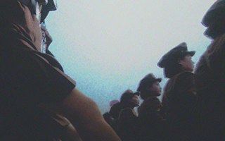
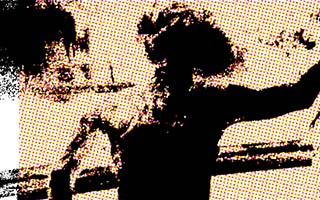
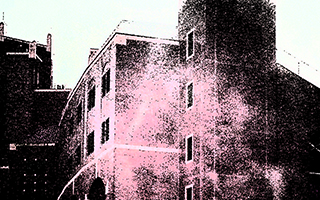

der Mond (ii)

popular music 1 & 2

FSU 2011-2013
A collage of electro-acoustic experiments, paranormal field recordings, and collaborative noise pop songs from 2012. Recorded up and down the Florida peninsula on a variety of digital and tape recorders.
FIX THIS TO THE CORRECT INFO
A compilation of field recordings made from the summer of 2011 to the fall of 2013 mostly in and around Tallahasee, FL: live music, short interviews, mechanical noises, band pratices, radio stations, karaoke nights, tape errors, strangers, wild animals, ghosts, live readings, and other mistakes. Mostly recorded on a cheap cassette recorder which fell apart soon after.